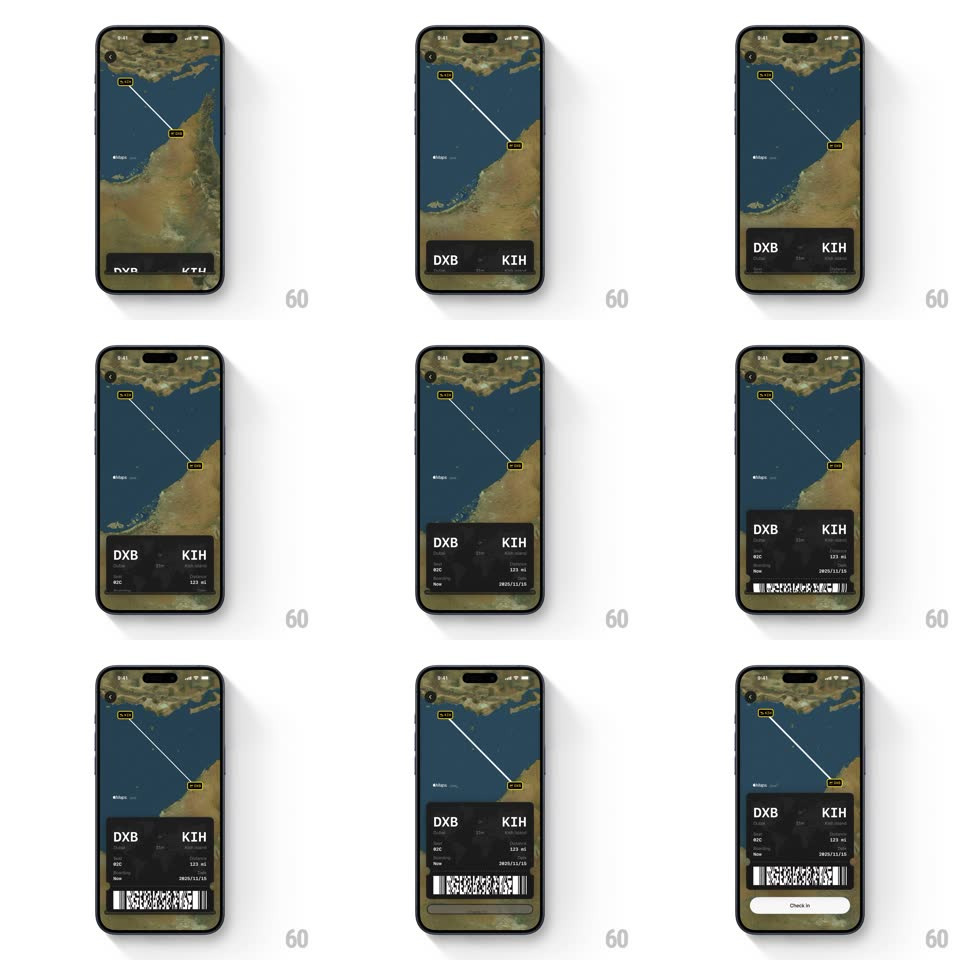

Media
Frame-by-frame

Rebuild this interaction 1:1: FocusFlight's check-in - a boarding-pass sheet slides up over the live route map, revealing the ticket detail rows, then the barcode, then the Check In button.

Rebuild this interaction 1:1: FocusFlight's check-in - a boarding-pass sheet slides up over the live route map, revealing the ticket detail rows, then the barcode, then the Check In button. ## Integration Integration: stack-agnostic spec - springs given as stiffness/damping, timed motions as duration + curve; map every value to your framework and animation library of choice. ## Scene FocusFlight: a dark satellite-style map showing the route arc DXB -> KIH with labeled airport chips. Over it, a dark boarding-pass sheet: big "DXB" and "KIH" codes with times, then detail rows (gate 03C, seat/class 123 ML, date 2025/11/15), a barcode strip, and a "Check In" pill button. ## Motion spec Pattern: staged bottom-sheet reveal of a boarding pass over the route map. - The map animates first: the route arc draws from DXB to KIH (900ms, ease-in-out) with the airport chips popping at each end (scale 0 -> 1, spring ~450/18). - The sheet slides up in three stages: first the code header (DXB / KIH, translateY 40 -> 0, 350ms), then 250ms later the detail rows stagger in (60ms apart, 250ms each, 16px rise), then the barcode wipes in with a horizontal reveal (300ms, left to right). - Finally the Check In button rises and brightens (250ms), then idles with a slow glow pulse (2.5s). - Dragging the sheet tracks 1:1 with rubber-band at the top; release snaps to expanded or collapsed (spring ~320/20). - The map stays interactive behind the sheet - panning drifts the route under the pass. ## Calibration - The barcode is a real dense strip, not placeholder blocks - it must read as scannable. - The sheet's top edge is a grabber pill; the notch between code header and details is the classic ticket perforation line. ## Reduced motion The sheet appears fully expanded with a 300ms fade; route arc draws without chip pops. ## Don't miss - Airport codes are huge and left/right aligned with times small beneath - the pass reads at a glance. - The route line is a clean arc with a slight dash texture, never a straight line.